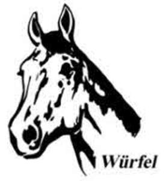

Trade Mark Journal No.2025/014 4 April 2025
UK00004151845 23 January 2025 (3,5,6,9,11,14,16,17,18,19,20,21,22,24,25,26,28,30,31,32,39,41,44)

International priority date claimed: 30 December 2024
(European Union Intellectual Property Office (EUIPO))
(019125578)
- Class 3
- Bleaching preparations and other substances for laundry use; Cleaning, polishing, scouring and abrasive preparations; Soaps; Perfumery, essential oils, cosmetics, hair lotions, dentifrices; Cleansing creams; Cosmetics for animals; Shampoos for pets; Preparations for cleaning and care of hides, animals' manes and tails, in particular shampoos, conditioning lotions, oils, glossing powders and sprays; Transfers (decorative) for cosmetic purposes; Dye; Hoof care preparations; Leather care preparations; Deodorants for human beings or for animals.
- Class 5
- Pharmaceutical, veterinary and sanitary preparations; Sanitary preparations for medical purposes; Dietetic preparations adapted for medical use; Infant formula; Nutritional supplements; Mineral food supplements; Plasters, materials for dressings; Disinfectants; Fungicides, herbicides, biocides; Chemical reagents for medical diagnosis and analysis; Medicines for human purposes, medicines for veterinary purposes, included in class 5; Medical goods, included in class 5, namely medical goods for hot and cold therapy, dental goods, implantable medical goods, medical bands, chains and rings, medical goods in semi-solid form, including ointments, sprays, creams, lotions, oils and gels, cement for animal hooves, bandages for dressings, filled first-aid boxes, infusions and rinsing solution; Nutritional supplements; Dietetic substances and nutritional supplements, not adapted for medical use, made from cereals, cereal by-products, plant proteins, minerals, vitamins, enzymes, trace elements and amino acids; Dietary supplements for animals; Parasiticides; Antiparasitic collars for animals; Antiparasitic preparations; Animal washes, Vulnerary sponges, Anthelmintics; Trace elements (Preparations of -) for human and animal use; Sterilising preparations; Animal washes; Nutritional supplements (not for medical or dietary purposes); Additives to fodder, not for medical purposes.
- Class 6
- Small items of metal hardware; Horseshoes; Chains; Horseshoe nails; Chests; Metal chests; Boxes of common metal; Baskets of metal; Masts of metal; Locks of metal for bags; Keys; Spurs; Ice nails [climbing irons]; Statues of non-precious metal; Stables of metal; Cattle chains; Bells for animals; Fences of metal; Chains for keys; Souvenir statuettes of metal; Figurines of metal; Trophies made of metal; Badges (not encoded), including name badges (not encoded) of metal; Memorial plaques, of metal.
- Class 9
- Riding helmets; Spectacles, sunglasses, diving and swimming goggles, 3D glasses; Optical, measuring, signalling, checking (supervision) and teaching apparatus and instruments, included in class 9; Apparatus for recording, transmission, processing and reproduction of sound, images or data; Data processing equipment and computers; Baby monitors; Spectacle cases, spectacle frames; Compact discs (read-only memory), compact discs (audio, images); Electronic publications (downloadable), Electronic pens (visual display units), Electronic agendas; Telescopes; Global Positioning System [GPS] apparatus; Directional compasses; Riding helmets; Cell phone straps; Close-up lenses; Sports glasses; Pocket calculators; USB flash drives; Video baby monitors; Balancing apparatus; Protective helmets for sports; Decorative magnets; Cradles, Personal weighing scales; Helmets (riding).
- Class 11
- Hot water bottles, Heaters, electric, for feeding bottles; Bed warmers; Electrically heated carpets; Heating filaments, electric; Fans (Electric -) for personal use; Electric kettles; Beverage cooling apparatus; Penlights; Pocket searchlights; Decorative lights; Fans for personal use.
- Class 14
- Jewellery; Ornaments [jewellery, jewellery (Am)]; Clocks and watches; Medallions; Fobs; Brooches; Ornamental pins (jewellery); Pins; Tie clips and tie pins; Cuff links; decorative key holders of precious metal; Coins; Medallions not of precious metal; Time instruments; Alarm clocks; Watches; Stopwatches; Sundials; Jewel cases; Rings being jewelry; Earrings; Coins; Works of art of precious metal; Bracelets [jewelry]; Jewellery for clothing.
- Class 16
- Printed matter; Greetings cards; Gift wrap paper; bags for preserving foodstuffs; Boxes for pocket handkerchiefs; Game and puzzle books; Flags of paper; Pencils; Pens; Writing sets, Pencil sets; Felt-tip pens, Fibre pens; Marker pens; Ink; Stamp pads; Rubber stamps; paint boxes; Pencils for painting and drawing; Chalks; decorations for pencils (stationery articles); Magazine; Newspapers; Books and daily newspapers; Printed teaching material; Address books; Organizers; Diaries; Road maps; Tickets; Collectors' cards; Vehicle bumper stickers; Albums for stickers; Calendars; Posters; Photographs; Postcards; Stamps; Rub down transfers; Office requisites (except furniture); Rubber erasers; Pencil sharpeners; Stands for pens and pencils; Paperclips; Bookmarkers; gift wrap, gift tags, gift bags, gift boxes and party accessories of paper, namely stickers of paper, luminous paper, table napkins of paper, handkerchiefs of paper, table mats of paper, tablecloths of paper, coasters of paper, Chinese lanterns, paper streamers; Vehicle bumper stickers; pass holders; Figurines made from cardboard; Trophies of cardboard; Badges (not encoded), including name badges (not encoded) of paper. .
- Class 17
- Souvenir statuettes of rubber; Figurines made from rubber; Trophies of rubber; Memorial plates of rubber.
- Class 18
- Saddlecloths of leather; Umbrellas and parasols; Sports bags (except those adapted for the goods they are designed to carry); Casual bags; Backpacks; Pack sacks; Travelling bags, school bags; Belt bags, handbags, bags of leather; Beach bags; Straps for suitcases; Holdalls; Attache cases; Vanity cases (not fitted); Toiletry bags; Key cases [leatherware]; Clothing for pets; Horse cloths; Pet collars and leashes; Feed bags; Bits for animals (harness); walking sticks; Animal harnesses; Rubber parts for stirrups; Collars for animals; Horseshoes; Bags (Game -) [hunting accessories]; Cases, of leather or leatherboard; Cat o' nine tails; Kneepads for horses; Equine boots; Leather leashes; Straps (Leather -); Laces (Leather -); Straps of leather (harness and saddlery); Muzzles; Whips; Furs (animal skins); Horse blankets; Headstalls; Horse collars; Riding saddles; Saddle trees; Pads for horse saddles; Fastenings for saddles; Saddlery; Blinkers [harness]; Umbrella covers; Frames for umbrellas or parasols; Umbrella rings; Umbrella sticks; Stirrups; Stirrup leathers; Pads for horse saddles; Tool bags sold empty; Reins; Harness straps; Traces (harness); Riding accessories of leather and imitations of leather, namely harness for animals, covers for horse saddles, blinders (harness), saddles, harnesses, stirrups, whips, headstalls, nose bags (feed bags), kneepads for horses, cribbing straps for horses, double bridles and reins, martingales, side reins, lunge reins and stirrup belts, vaulting surcingles; Training leads for horses; Commemorative medals and memorial plates of leather; Souvenir statuettes of leather; Nose bags [feed bags].
- Class 19
- Souvenir statuettes of marble; Souvenir statuettes of stone; Figurines of marble or stone; Trophies of marble or stone; Memorial plates of stone or marble; Covers, not of metal.
- Class 20
- Mirrors (silvered glass); Newspaper display stands; Souvenir statuettes of plastic or wood; Figurines of wood, commemorative medals and memorial plates of plastic or wood or plaster; Figurines of plastic; trophies made of plastic and wood; Decorative keyholders of plastic; Cushions; Furniture; Seats, for indoor and outdoor use; Shelves [furniture]; Coat hangers; Inflatable publicity objects; Book stands; Display boards; Picture frames; Bedding (other than bed linen); Flagpoles; Fodder racks; Wardrobe hooks (not of metal); Coatstands; Plaited straw (except matting); Plaited wooden screens (furniture); Stag antlers; Garment covers [storage]; Identification bracelets, not of metal; Kennels for household pets; Interior textile window blinds; Chests, not of metal; Numberplates, not of metal; High chairs for babies; Infant walkers; Cushions; Pet cushions; Baskets, non-metallic; Wickerwork; Playpens; Mats for infant playpens; Stools; Tables; Changing mats.
- Class 21
- Non-electronic household or kitchen utensils and containers; Brooms; Beer mugs, Mugs, Drinking cups and Beverage glassware, Decanters; plates and trays; Coasters for glasses or bottles; Saucers; Jars; Bottle openers, electric and non-electric; Corkscrews, electric and non-electric; Crown-cap removers; Bottles; Vacuum flasks; Non-electric containers for food and beverages; Hair combs, hair brushes; Feed bowls and cages for pets; Dustbins; Baby baths [portable]; Heaters for feeding bottles, non-electric; Mugs; Flower and plant holders; Butter dishes; Buckets; Mouse traps; Gardening gloves; Attracting and killing insects (Electric devices for -); Salt shakers; Dishes; Sponges for household purposes; Litter trays; Animal bristles (brushware); Combs for animals; Horse brushes; Commemorative cups of glass or porcelain; Commemorative medals and memorial plates of porcelain or glass; Figurines of glass; Souvenir statuettes of glass; Trophies made of glass; Souvenir statuettes of porcelain; Mangers for animals; Mangers for horses.
- Class 22
- Waterproof covers [tarpaulins]; Covers in the nature of tarpaulins for vehicles; Tarpaulins, awnings, tents, and unfitted coverings.
- Class 24
- Textiles and textile materials, included in class 24; Bed linen; Bedspreads; Bed and table covers; Sleeping bags; Banners; Flags; Pennants and Pennants; Blankets; Bath towels; Canopies for beds; Bed clothes; Cloth; Fabrics; Crib bumpers; Table linen; Curtains; Mosquito nets; Shrouds; Tapestries; Padding of fabrics and textiles; Towels of textile; Commemorative medals and memorial plates of textile or woollen fabric.
- Class 25
- Clothing; Shoes; Headgear; Shirts; Knitted goods (clothing); Pullovers, sleeveless pullovers; Sports jerseys; Sleeveless jerseys, dresses; Skirts; Underwear; Swimming suits, shorts; Trousers; Caps [headwear]; Hats; Neck scarfs [mufflers]; Scarves; Gym suits; Jackets [clothing]; Sports jackets; Blousons; Blazers; Waterproofs; Coats; Neckties; Joint tape for clothing; Headbands [clothing]; Gloves [clothing]; Overalls; Bibs (not of paper); Sleepsuits; Playclothes for infants and children; Socks and stockings; Stocking suspenders; Waist belts; Stocking suspenders; Babies' pants (clothing); Layettes [clothing]; Bath sandals; Athletics shoes; Athletics vests; Boots; Equestrian clothing, Including shoes/boots and Riding gloves.
- Class 26
- Ornaments novelty buttons; Lanyards of textile and of twisted metals; Barrettes; Decorative articles for the hair; Bows for the hair; Heat adhesive patches for repairing textile articles; Badges, Not of precious metal (medals and trophies, stall plaques, signboards); Buttons; Hooks and eyes; Needles; Artificial flowers, plants and fruit; Competitors' numbers, Not of textile; Elastic ribbons; Cords for clothing; Badges (not encoded), including name badges (not encoded) of plastic or textile.
- Class 28
- Games, toys, and playthings; Balls for games; Table games; Dolls and soft toys; Puzzles; Balloons; Inflatable toys; Card games; Gymnastic and sporting articles not included in other classes; Toys for animals; Rattles [playthings]; Golf clubs; Foam hands (toys).
- Class 30
- Coffee, tea, cocoa, sugar, rice; Artificial coffee; Flour and preparations made from bread, pastry, cereals and confectionery; Honey; Yeast; Sweetmeats [candy]; Cookies and crackers; Honey; Spices.
- Class 31
- Agricultural, horticultural, forestry products; Foodstuffs for animals, included in class 31; Dietetic foodstuffs for animals, not for medical purposes; Supplements for animal foodstuffs, not for medical purposes; Fresh fruits and vegetables; Seeds; Malt; Live plants and natural flowers; Foodstuffs for horses; Edible horse treats; Formula animal feed; Mixed animal feed; Milled food products for animals; Animal foodstuffs in the form of pellets; Cereals products for consumption by animals; Maize for consumption by animals; Oats for consumption by animals; Processed cereals for consumption by animals.
- Class 32
- Non-alcoholic drinks, fruit drinks and fruit juices; Concentrates for making beverages; Syrups and powders for making non-alcoholic beverages; Minerals and aerated waters; Other non-alcoholic drinks; Energy drinks; Isotonic drinks; Hypertonic drinks; Vegetable and fruit juice beverages; Vegetable beverages; Vegetable juices with vitamins; Enriched beverages, not for medical purposes.
- Class 39
- Rental of horses as a means of transport; Travel arrangement.
- Class 41
- Providing of training; Provision of training courses, Riding schools; Providing recreation facilities; Entertainment; Animal training; Training of horses; Education and sporting activities for horses and riders; Sporting and cultural activities; Retraining and holistic dressage training for horses; Pole work, fieldwork, groundwork, double lunge work; Seat training; Posture training; Arranging of tournaments; Entertainment and sporting activities in the nature of rhythm work using sport, music and dance methods; Organisation and presentation of shows and tournaments; Appearances at clubs and exhibitions; Coaching for competitions; Retraining of horses; Dressage training.
- Class 44
- Veterinary services and the care and treatment of animals; Farming (animals); Physiotherapy for riders; Physical therapy, physiotherapy; Osteopathy; Acupressure for horses; Physiotherapy diagnosis for riders and horses; Treatment and consultancy in the field of body care, beauty care and healthcare, all being for human beings and animals; Dietetic advisory services, Consultancy services relating to cosmetics, Oxygen cosmetics, all being for both humans and animals; Rehabilitation services namely, rehab instruction for horses under saddle; Outpatient and medical care, and therapeutic treatment in the field of remedies, psychological care, therapeutic treatment in relation to both animals and humans; Nutrition consultancy in the field of animal breeding; Hygiene and beauty care for humans and animals; Medical and therapeutic development training, recovery training, rehabilitation and strengthening training being both in-hand training and ground training for horses; Medical straightness training for horses and gymnastics; Osteopathy for horses and riders.
Köberle GmbH & Co. KG
Representative: Trowers & Hamlins LLP